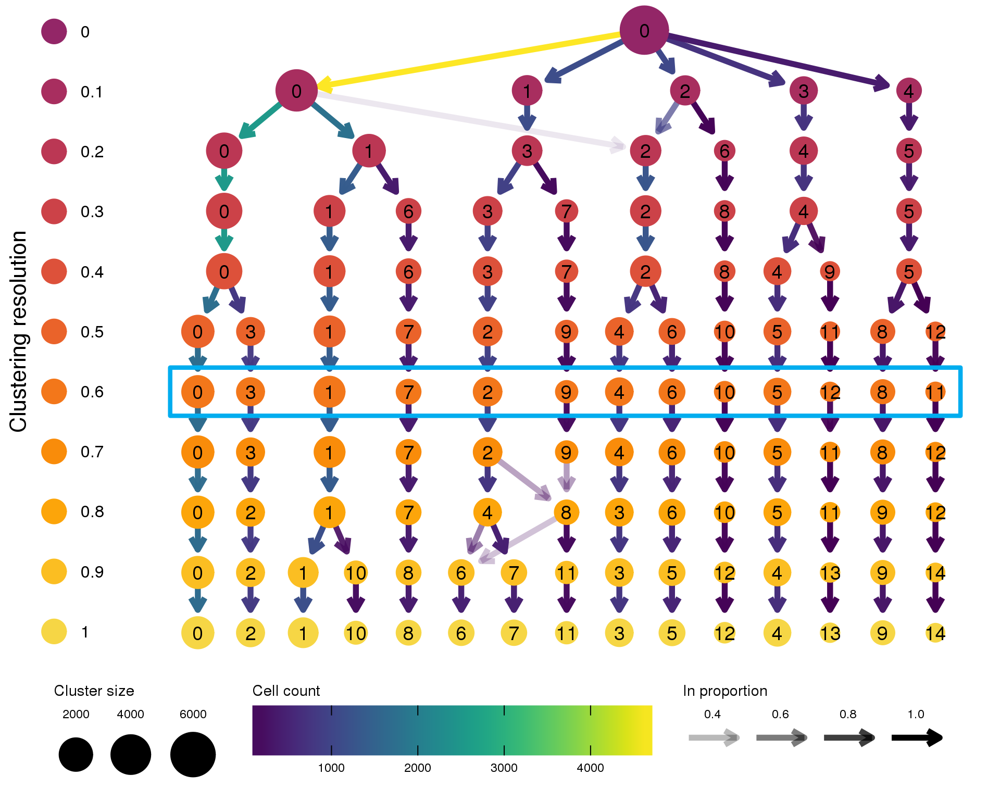
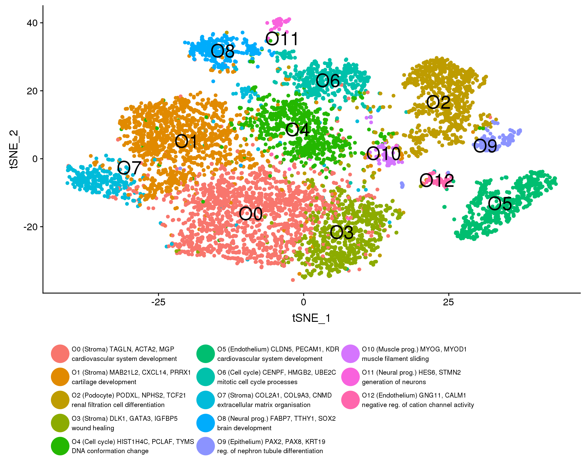
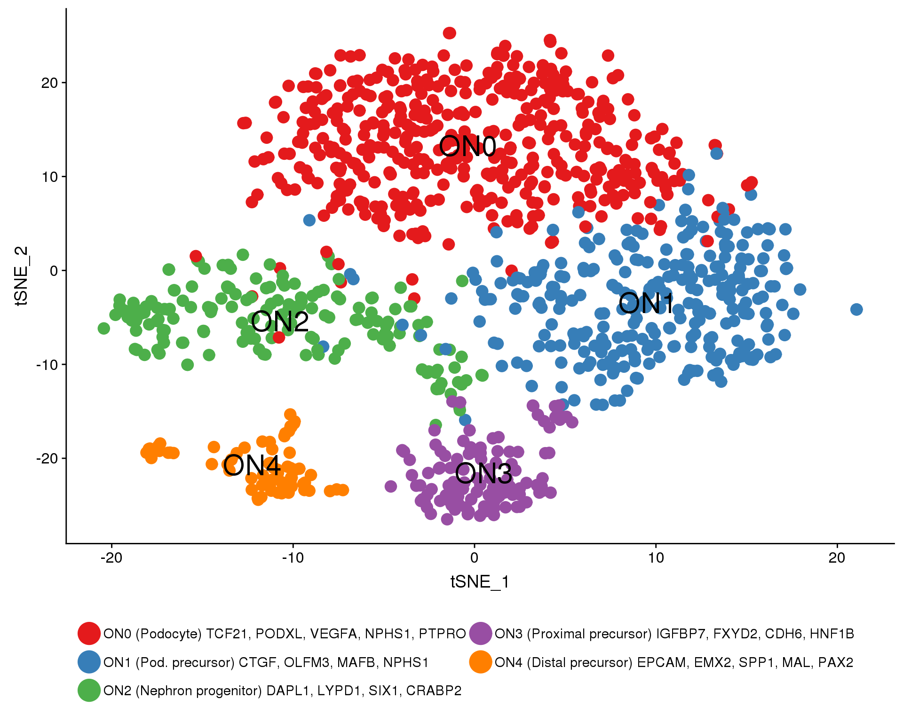
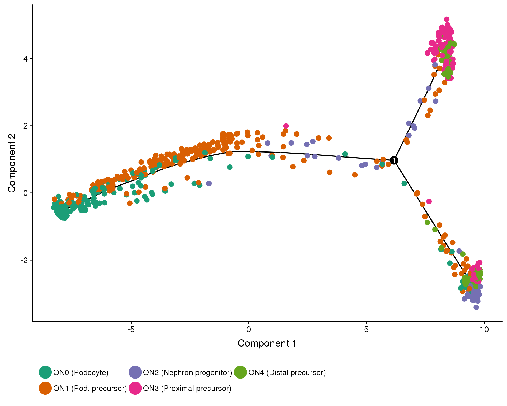
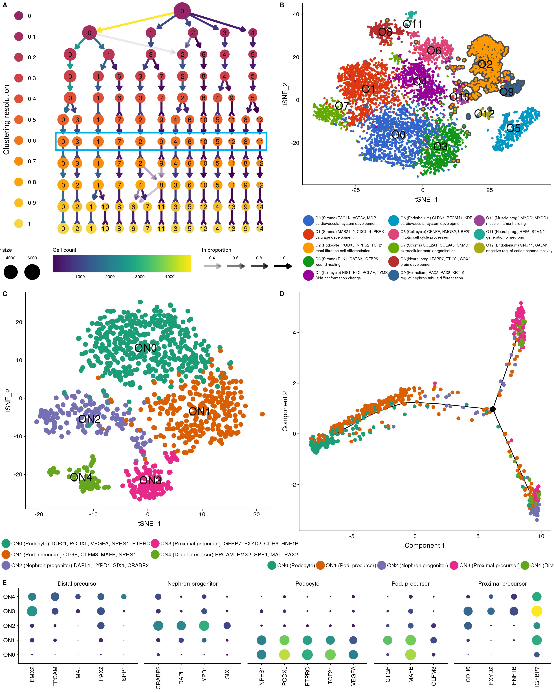

Last updated: 2018-09-10
workflowr checks: (Click a bullet for more information) ✔ R Markdown file: up-to-date
Great! Since the R Markdown file has been committed to the Git repository, you know the exact version of the code that produced these results.
✔ Environment: empty
Great job! The global environment was empty. Objects defined in the global environment can affect the analysis in your R Markdown file in unknown ways. For reproduciblity it’s best to always run the code in an empty environment.
✔ Seed:
set.seed(20180730)
The command set.seed(20180730) was run prior to running the code in the R Markdown file. Setting a seed ensures that any results that rely on randomness, e.g. subsampling or permutations, are reproducible.
✔ Session information: recorded
Great job! Recording the operating system, R version, and package versions is critical for reproducibility.
✔ Repository version: 91342d1
wflow_publish or wflow_git_commit). workflowr only checks the R Markdown file, but you know if there are other scripts or data files that it depends on. Below is the status of the Git repository when the results were generated:
Ignored files:
Ignored: .Rhistory
Ignored: .Rproj.user/
Ignored: analysis/cache/
Ignored: packrat/lib-R/
Ignored: packrat/lib-ext/
Ignored: packrat/lib/
Ignored: packrat/src/
Unstaged changes:
Modified: output/04D_Organoids_Figures/figure1B.pdf
Modified: output/04D_Organoids_Figures/figure1C.pdf
Modified: output/04D_Organoids_Figures/figure1D.pdf
Modified: output/04D_Organoids_Figures/figure1_panel.pdf
Modified: output/07D_Combined_Figures/figure2A.pdf
Modified: output/07D_Combined_Figures/figure2B.pdf
Modified: output/07D_Combined_Figures/figure2C.pdf
Modified: output/07D_Combined_Figures/figure2D.pdf
Modified: output/07D_Combined_Figures/figure2E.pdf
Modified: output/07D_Combined_Figures/figure2_panel.pdf
Deleted: output/07_Combined_Clustering/c7_c17_lind_de.csv
# scRNA-seq
library("Seurat")
library("monocle")
# Plotting
library("clustree")
library("cowplot")
# Presentation
library("glue")
library("knitr")
# Parallel
# Paths
library("here")
# Output
# Tidyverse
library("tidyverse")source(here("R/output.R"))orgs.path <- here("data/processed/Organoids_clustered.Rds")
orgs.neph.path <- here("data/processed/Organoids_nephron.Rds")
orgs.neph.cds.path <- here("data/processed/Organoids_trajectory.Rds")
dir.create(here("output", DOCNAME), showWarnings = FALSE)In this document we are going to look at all of the organoids analysis results and produce a series of figures for the paper.
if (file.exists(orgs.path)) {
orgs <- read_rds(orgs.path)
} else {
stop("Clustered Organoids dataset is missing. ",
"Please run '04_Organoids_Clustering.Rmd' first.",
call. = FALSE)
}if (file.exists(orgs.neph.path)) {
orgs.neph <- read_rds(orgs.neph.path)
} else {
stop("Clustered Organoids nephron dataset is missing. ",
"Please run '04B_Organoids_Nephron.Rmd' first.",
call. = FALSE)
}if (file.exists(orgs.neph.cds.path)) {
orgs.neph.cds <- read_rds(orgs.neph.cds.path)
} else {
stop("Organoids nephron trajectory dataset is missing. ",
"Please run '04C_Organoids_Trajectory.Rmd' first.",
call. = FALSE)
}f1A <- clustree(orgs, node_size_range = c(6, 16), node_text_size = 5,
edge_width = 2)
leg <- {f1A + guides(colour = FALSE,
edge_alpha = guide_legend(title = "In proportion",
title.position = "top",
label.position = "top",
override.aes = list(edge_width = 2),
keywidth = 3),
edge_colour = guide_edge_colourbar(title = "Cell count",
title.position = "top",
barwidth = 20,
barheight = 2.5),
size = guide_legend(title = "Cluster size",
title.position = "top",
label.position = "top")) +
theme(legend.position = "bottom")} %>%
get_legend()
f1A <- f1A +
annotate("rect", xmin = -9, xmax = 6, ymin = 3.6, ymax = 4.4,
alpha = 0, colour = "#00ADEF", size = 1.5) +
scale_colour_viridis_d(option = "inferno", begin = 0.4, end = 0.9) +
guides(size = FALSE, edge_alpha = FALSE, edge_colour = FALSE,
colour = guide_legend(override.aes = list(size = 8),
keyheight = 3,
title = "Clustering resolution",
label.theme = element_text(size = 12),
title.position = "left",
title.theme = element_text(size = 16,
angle = 90,
hjust = 0.5))) +
theme(legend.position = "left")
f1A <- plot_grid(f1A, leg, ncol = 1, rel_heights = c(1, 0.2))
ggsave(here("output", DOCNAME, "figure1A.png"), f1A,
height = 8, width = 10)
ggsave(here("output", DOCNAME, "figure1A.pdf"), f1A,
height = 8, width = 10)
f1A
plot.data <- orgs %>%
GetDimReduction("tsne", slot = "cell.embeddings") %>%
data.frame() %>%
rownames_to_column("Cell") %>%
mutate(Cluster = orgs@ident) %>%
group_by(Cluster)
lab.data <- plot.data %>%
group_by(Cluster) %>%
summarise(tSNE_1 = mean(tSNE_1),
tSNE_2 = mean(tSNE_2)) %>%
mutate(Label = paste0("O", Cluster))
clust.labs <- c(
"O0 (Stroma) TAGLN, ACTA2, MGP\ncardiovascular system development",
"O1 (Stroma) MAB21L2, CXCL14, PRRX1\ncartilage development",
"O2 (Podocyte) PODXL, NPHS2, TCF21\nrenal filtration cell differentiation",
"O3 (Stroma) DLK1, GATA3, IGFBP5\nwound healing",
"O4 (Cell cycle) HIST1H4C, PCLAF, TYMS\nDNA conformation change",
"O5 (Endothelium) CLDN5, PECAM1, KDR\ncardiovascular system development",
"O6 (Cell cycle) CENPF, HMGB2, UBE2C\nmitotic cell cycle processes",
"O7 (Stroma) COL2A1, COL9A3, CNMD\nextracellular matrix organisation",
"O8 (Neural prog.) FABP7, TTHY1, SOX2\nbrain development",
"O9 (Epithelium) PAX2, PAX8, KRT19\nreg. of nephron tubule differentiation",
"O10 (Muscle prog.) MYOG, MYOD1\nmuscle filament sliding",
"O11 (Neural prog.) HES6, STMN2\ngeneration of neurons",
"O12 (Endothelium) GNG11, CALM1\nnegative reg. of cation channel activity"
)
f1B <- ggplot(plot.data, aes(x = tSNE_1, y = tSNE_2, colour = Cluster)) +
geom_point() +
geom_text(data = lab.data, aes(label = Label), colour = "black", size = 8) +
#scale_color_paletteer_d("ggthemes", "gdocs", labels = clust.labs) +
scale_colour_discrete(labels = clust.labs) +
guides(colour = guide_legend(ncol = 3, override.aes = list(size = 10),
label.theme = element_text(size = 8))) +
theme_cowplot() +
theme(legend.position = "bottom",
legend.title = element_blank())
ggsave(here("output", DOCNAME, "figure1B.png"), f1B,
height = 8, width = 10)
ggsave(here("output", DOCNAME, "figure1B.pdf"), f1B,
height = 8, width = 10)
f1B
| Version | Author | Date |
|---|---|---|
| 0a266e9 | Luke Zappia | 2018-09-07 |
plot.data <- orgs.neph %>%
GetDimReduction("tsne", slot = "cell.embeddings") %>%
data.frame() %>%
rownames_to_column("Cell") %>%
mutate(Cluster = orgs.neph@ident) %>%
group_by(Cluster)
lab.data <- plot.data %>%
group_by(Cluster) %>%
summarise(tSNE_1 = mean(tSNE_1),
tSNE_2 = mean(tSNE_2)) %>%
mutate(Label = paste0("ON", Cluster))
clust.labs <- c(
"ON0 (Podocyte) TCF21, PODXL, VEGFA, NPHS1, PTPRO",
"ON1 (Pod. precursor) CTGF, OLFM3, MAFB, NPHS1",
"ON2 (Nephron progenitor) DAPL1, LYPD1, SIX1, CRABP2",
"ON3 (Proximal precursor) IGFBP7, FXYD2, CDH6, HNF1B",
"ON4 (Distal precursor) EPCAM, EMX2, SPP1, MAL, PAX2"
)
f1C <- ggplot(plot.data, aes(x = tSNE_1, y = tSNE_2, colour = Cluster)) +
geom_point(size = 4) +
geom_text(data = lab.data, aes(label = Label), colour = "black", size = 8) +
scale_color_brewer(palette = "Set1", labels = clust.labs) +
guides(colour = guide_legend(ncol = 2, override.aes = list(size = 8),
label.theme = element_text(size = 11))) +
theme_cowplot() +
theme(legend.position = "bottom",
legend.title = element_blank())
ggsave(here("output", DOCNAME, "figure1C.png"), f1C,
height = 8, width = 10)
ggsave(here("output", DOCNAME, "figure1C.pdf"), f1C,
height = 8, width = 10)
f1C
| Version | Author | Date |
|---|---|---|
| 0a266e9 | Luke Zappia | 2018-09-07 |
clust.labs <- c(
"ON0 (Podocyte)",
"ON1 (Pod. precursor)",
"ON2 (Nephron progenitor)",
"ON3 (Proximal precursor)",
"ON4 (Distal precursor)"
)
f1D <- plot_cell_trajectory(orgs.neph.cds,
color_by = "NephCluster", cell_size = 3) +
scale_color_brewer(palette = "Dark2", labels = clust.labs) +
guides(colour = guide_legend(nrow = 2, override.aes = list(size = 8),
label.theme = element_text(size = 11))) +
theme_cowplot() +
theme(legend.position = "bottom",
legend.title = element_blank())
ggsave(here("output", DOCNAME, "figure1D.png"), f1D,
height = 8, width = 10)
ggsave(here("output", DOCNAME, "figure1D.pdf"), f1D,
height = 8, width = 10)
f1D
| Version | Author | Date |
|---|---|---|
| 0a266e9 | Luke Zappia | 2018-09-07 |
leg <- get_legend(f1C + theme_minimal() + theme(legend.title = element_blank()))
p1 <- plot_grid(f1A, f1B,
f1C + theme(legend.position = "none"),
f1D + theme(legend.position = "none"), nrow = 2,
labels = c("A", "B", "C", "D"))
panel <- plot_grid(p1, leg, ncol = 1, rel_heights = c(1, 0.1))
ggsave(here("output", DOCNAME, "figure1_panel.png"), panel,
height = 18, width = 16)
ggsave(here("output", DOCNAME, "figure1_panel.pdf"), panel,
height = 18, width = 16)
panel
| Version | Author | Date |
|---|---|---|
| 0a266e9 | Luke Zappia | 2018-09-07 |
This table describes the output files produced by this document. Right click and Save Link As… to download the results.
kable(data.frame(
File = c(
glue("[figure1A.png]({getDownloadURL('figure1A.png', DOCNAME)})"),
glue("[figure1A.pdf]({getDownloadURL('figure1A.pdf', DOCNAME)})"),
glue("[figure1B.png]({getDownloadURL('figure1B.png', DOCNAME)})"),
glue("[figure1B.pdf]({getDownloadURL('figure1B.pdf', DOCNAME)})"),
glue("[figure1C.png]({getDownloadURL('figure1C.png', DOCNAME)})"),
glue("[figure1C.pdf]({getDownloadURL('figure1C.pdf', DOCNAME)})"),
glue("[figure1D.png]({getDownloadURL('figure1D.png', DOCNAME)})"),
glue("[figure1D.pdf]({getDownloadURL('figure1D.pdf', DOCNAME)})"),
glue("[figure1_panel.png]({getDownloadURL('figure1_panel.png', DOCNAME)})"),
glue("[figure1_panel.pdf]({getDownloadURL('figure1_panel.pdf', DOCNAME)})")
),
Description = c(
"Figure 1A in PNG format",
"Figure 1A in PDF format",
"Figure 1B in PNG format",
"Figure 1B in PDF format",
"Figure 1C in PNG format",
"Figure 1C in PDF format",
"Figure 1D in PNG format",
"Figure 1D in PDF format",
"Figure panel in PNG format",
"Figure panel in PDF format"
)
))| File | Description |
|---|---|
| figure1A.png | Figure 1A in PNG format |
| figure1A.pdf | Figure 1A in PDF format |
| figure1B.png | Figure 1B in PNG format |
| figure1B.pdf | Figure 1B in PDF format |
| figure1C.png | Figure 1C in PNG format |
| figure1C.pdf | Figure 1C in PDF format |
| figure1D.png | Figure 1D in PNG format |
| figure1D.pdf | Figure 1D in PDF format |
| figure1_panel.png | Figure panel in PNG format |
| figure1_panel.pdf | Figure panel in PDF format |
devtools::session_info() setting value
version R version 3.5.0 (2018-04-23)
system x86_64, linux-gnu
ui X11
language (EN)
collate en_US.UTF-8
tz Australia/Melbourne
date 2018-09-05
package * version date source
assertthat 0.2.0 2017-04-11 CRAN (R 3.5.0)
backports 1.1.2 2017-12-13 CRAN (R 3.5.0)
base * 3.5.0 2018-06-18 local
bindr 0.1.1 2018-03-13 cran (@0.1.1)
bindrcpp 0.2.2 2018-03-29 cran (@0.2.2)
broom 0.5.0 2018-07-17 cran (@0.5.0)
cellranger 1.1.0 2016-07-27 CRAN (R 3.5.0)
cli 1.0.0 2017-11-05 CRAN (R 3.5.0)
codetools 0.2-15 2016-10-05 CRAN (R 3.5.0)
colorspace 1.3-2 2016-12-14 cran (@1.3-2)
compiler 3.5.0 2018-06-18 local
crayon 1.3.4 2017-09-16 CRAN (R 3.5.0)
datasets * 3.5.0 2018-06-18 local
devtools 1.13.6 2018-06-27 CRAN (R 3.5.0)
digest 0.6.15 2018-01-28 CRAN (R 3.5.0)
dplyr * 0.7.6 2018-06-29 cran (@0.7.6)
evaluate 0.10.1 2017-06-24 CRAN (R 3.5.0)
forcats * 0.3.0 2018-02-19 CRAN (R 3.5.0)
ggplot2 * 3.0.0 2018-07-03 cran (@3.0.0)
git2r 0.21.0 2018-01-04 CRAN (R 3.5.0)
glue * 1.3.0 2018-07-17 cran (@1.3.0)
graphics * 3.5.0 2018-06-18 local
grDevices * 3.5.0 2018-06-18 local
grid 3.5.0 2018-06-18 local
gtable 0.2.0 2016-02-26 cran (@0.2.0)
haven 1.1.2 2018-06-27 CRAN (R 3.5.0)
here * 0.1 2017-05-28 CRAN (R 3.5.0)
hms 0.4.2 2018-03-10 CRAN (R 3.5.0)
htmltools 0.3.6 2017-04-28 CRAN (R 3.5.0)
httr 1.3.1 2017-08-20 CRAN (R 3.5.0)
jsonlite * 1.5 2017-06-01 CRAN (R 3.5.0)
knitr * 1.20 2018-02-20 CRAN (R 3.5.0)
lattice 0.20-35 2017-03-25 CRAN (R 3.5.0)
lazyeval 0.2.1 2017-10-29 cran (@0.2.1)
lubridate 1.7.4 2018-04-11 cran (@1.7.4)
magrittr 1.5 2014-11-22 CRAN (R 3.5.0)
memoise 1.1.0 2017-04-21 CRAN (R 3.5.0)
methods * 3.5.0 2018-06-18 local
modelr 0.1.2 2018-05-11 CRAN (R 3.5.0)
munsell 0.5.0 2018-06-12 cran (@0.5.0)
nlme 3.1-137 2018-04-07 CRAN (R 3.5.0)
pillar 1.3.0 2018-07-14 cran (@1.3.0)
pkgconfig 2.0.1 2017-03-21 cran (@2.0.1)
plyr 1.8.4 2016-06-08 cran (@1.8.4)
purrr * 0.2.5 2018-05-29 cran (@0.2.5)
R.methodsS3 1.7.1 2016-02-16 CRAN (R 3.5.0)
R.oo 1.22.0 2018-04-22 CRAN (R 3.5.0)
R.utils 2.6.0 2017-11-05 CRAN (R 3.5.0)
R6 2.2.2 2017-06-17 CRAN (R 3.5.0)
Rcpp 0.12.18 2018-07-23 cran (@0.12.18)
readr * 1.1.1 2017-05-16 CRAN (R 3.5.0)
readxl 1.1.0 2018-04-20 CRAN (R 3.5.0)
rlang 0.2.1 2018-05-30 CRAN (R 3.5.0)
rmarkdown 1.10.2 2018-07-30 Github (rstudio/rmarkdown@18207b9)
rprojroot 1.3-2 2018-01-03 CRAN (R 3.5.0)
rstudioapi 0.7 2017-09-07 CRAN (R 3.5.0)
rvest 0.3.2 2016-06-17 CRAN (R 3.5.0)
scales 0.5.0 2017-08-24 cran (@0.5.0)
stats * 3.5.0 2018-06-18 local
stringi 1.2.4 2018-07-20 cran (@1.2.4)
stringr * 1.3.1 2018-05-10 CRAN (R 3.5.0)
tibble * 1.4.2 2018-01-22 cran (@1.4.2)
tidyr * 0.8.1 2018-05-18 cran (@0.8.1)
tidyselect 0.2.4 2018-02-26 cran (@0.2.4)
tidyverse * 1.2.1 2017-11-14 CRAN (R 3.5.0)
tools 3.5.0 2018-06-18 local
utils * 3.5.0 2018-06-18 local
whisker 0.3-2 2013-04-28 CRAN (R 3.5.0)
withr 2.1.2 2018-03-15 CRAN (R 3.5.0)
workflowr 1.1.1 2018-07-06 CRAN (R 3.5.0)
xml2 1.2.0 2018-01-24 CRAN (R 3.5.0)
yaml 2.2.0 2018-07-25 cran (@2.2.0) This reproducible R Markdown analysis was created with workflowr 1.1.1
{kind=link}
{kind=link}
{kind=link}
{kind=link}
{kind=link}